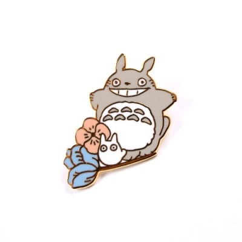

YouTube
#CloneCoding
#CodingTest
#YDK
Clone Coding: YouTube Mobile Website 유튜브 모바일 웹사이트 따라 만들기 | 프론트엔드 개발자가 되기 위한 연습 과정, HTML and CSS, JavaScript를 사용한 예제입니다.
1M views 1 month ago
1K
0
Share
Save
Report

코딩 by YDK
1M subscriber
subscribe
Up next
HTML과 CSS, JavaScript 기초를 쌓아 기본기를 다지고, 향후 React를 배우기 위해 여러 프로젝트를 만들어본다.
코딩 by YDK
72K views
프론트엔드에 대한 지식을 쌓고 시간이 된다면 백엔드 분야도 공부하자, 풀스택 개발자를 목표로 한다.
코딩 by YDK
25K views
취업할려면 코딩 테스트도 준비해야되는데 프론트엔드 기본기를 다지고 준비하자, 백엔드는 코테 이후 공부한다.
코딩 by YDK
26K views